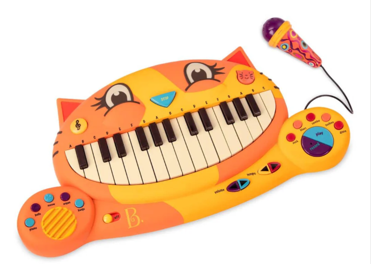
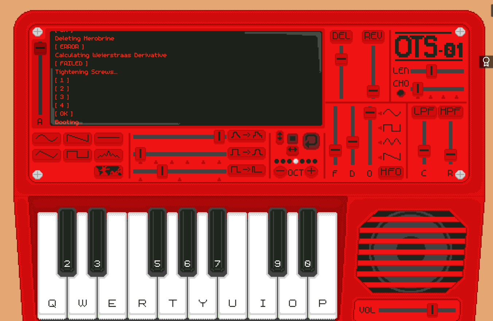
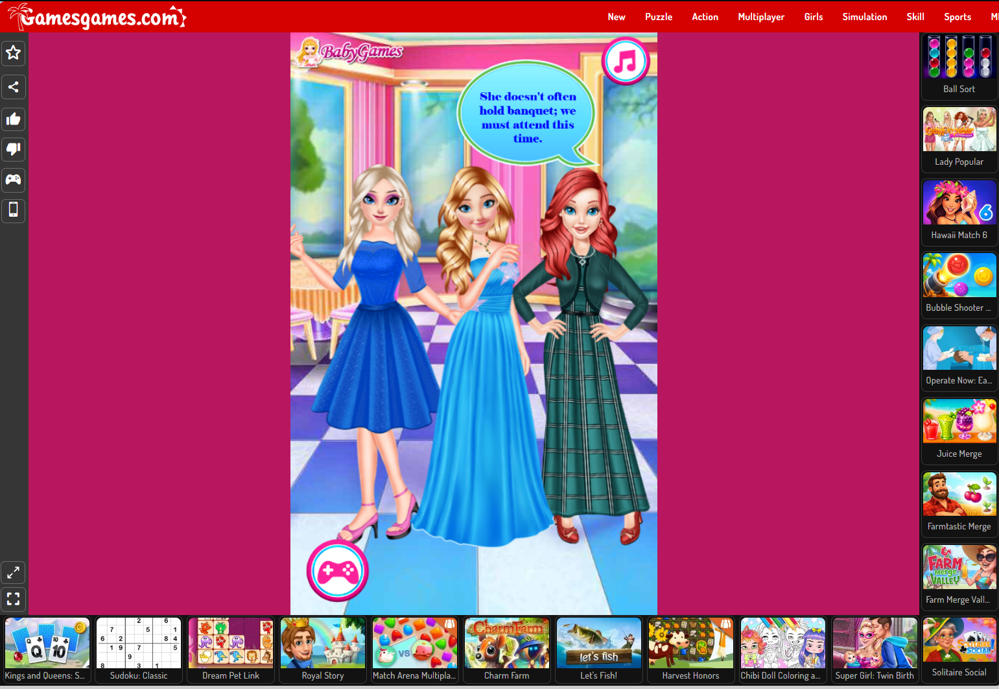
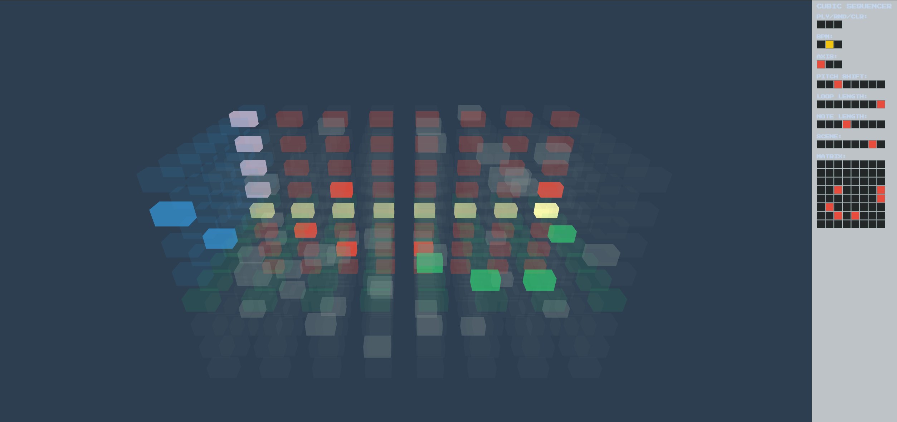
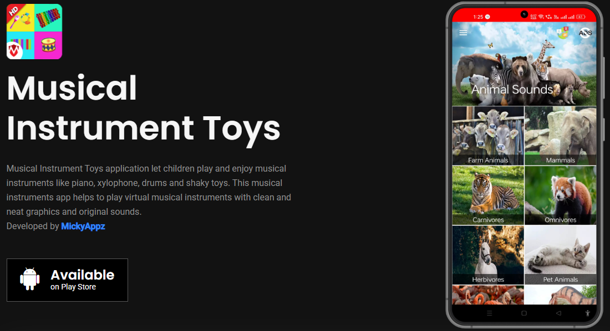

SCENARIO
A musical toy designed for toddlers to explore music in a fun and engaging way
PROMPT
Design a way for toddlers to play music, and feel excited about their creations
CONTEXT
Browser based musical instruments offer users the ability to dynamically perform music and explore complex audio design. While these interactions allow for a depth of control, they can be intimidating for many adult users, let alone you children whose language skills are still developing.
DISCUSSION
Looking at the brief, key details shape how it frames the project's purpose and worth. At its core, the goal is to design an instrument for toddlers to play music and feel excited about their creations thus the measure of success here is interpreted as emotional excitement, not technical skill. The brief frames the problem through contrast: browser-based instruments already offer dynamic performance and complex audio design, but that depth becomes a barrier for children whose skills are still developing. This suggests the project's worth lies in removing complexity without removing the feeling of creative agency, closer to discovery and cause-and-effect than performance for others.
Taking excitement as the integral aspect of the instrument's purpose, this points toward how excitement gets induced in the simplest possible way. Rather than performance or shared cultural memory, the connection here is more immediate, a toddler pressing something and seeing or hearing an instant, delightful reaction. Discovery also plays a role, the instrument doesn't need to teach musical concepts, it just needs to reward curiosity enough that a child associates their own actions with something joyful. That immediacy cause leading directly to effect seems to be where the excitement actually lives, more than in deeper musical or social meaning or technique.
Building off this interpretation of purpose, and other aspects of the context's particulars, the potential worth can be recognised through three particular values: curiosity, simplicity, and teaching. It should invite curiosity, in that it doesn't feel overwhelmingly complex in its initial appearance though this doesn't mean it shouldn't be complex at all, only that this complexity may be optionally revealed over time as engagement deepens. In this way it should also embody simplicity, avoiding an appearance or functionality that feels overwrought or difficult to grasp. Finally, tying into the purpose of inducing excitement in a simple way, is the value of teaching. The instrument should draw on familiar cultural framings either of other instruments or other aspects of musical culture so that even a toddler's first interaction taps into something recognisable, making the resulting excitement feel immediate rather than requiring new learning.
SYNOPSIS
The instrument will be built around a variety of synthesiser sounds, presented through a simplified keyboard interface. This will include a design language of simple shapes and vibrant colours, with each key mapped to distinct, playful tones that respond instantly to clicks.
RESPONSE TO PURPOSE AND WORTH
This responds to the purpose of inducing excitement through immediate, simple cause-and-effect. By mapping each key to a distinct, playful tone that responds instantly to touch, the instrument reinforces the connection between a toddler's own action and a delightful result, rather than relying on any pre-existing musical understanding. In choosing the range of synthesiser sounds included, there's opportunity to draw on familiar cultural framing, playful, recognisable tones that echo other instruments or sounds a child may already associate with fun, supporting the value of teaching without requiring explicit instruction. I would minimise the number of visible controls, instead relying on simple shapes and vibrant colours to guide interaction, helping with the overall sense of simplicity. I would also keep the keyboard's layout uniform and unlabelled beyond colour and shape cues, so that no reading or prior musical knowledge is required to begin playing. This would additionally support curiosity; as a child grows more familiar with the instrument, they might begin to notice patterns between colours, shapes, and sounds, discovering structure on their own rather than being taught it directly.
FRAMING
A key conceptual influence on this project is the Meowsic cat piano and if its logic of translating an everyday, unintimidating shape into an instrument could be applied more broadly. It's worth noting that a toddler's frame of reference for "musical instrument" is shaped less by any technical understanding of sound and more by early, playful associations such as an animal, a colour, a shape they already recognise. While the Meowsic has its own specific character as a licensed toy product, from this the proposal would draw more on the underlying design logic than the object itself: a whimsical shape rendered in bright, contrasting colours, paired with big, clearly differentiated keys designed for small, imprecise hands. This suggests an approach where the instrument's form doesn't read as a scaled-down version of an adult instrument, but as something built from the ground up around a toddler's own visual and tactile vocabulary, favouring a single friendly silhouette and oversized, high-contrast keys over the layered rows of controls found in more conventional keyboard designs.

INTERACTION DESIGN ANALYSIS
EXAMPLE 1: Virtual Synth
This example was chosen to discuss information design, in particular the way it presents a single, contained instrument interface that houses all its complexity within one object. Users arrive at the OTS-01 to find a self-contained toy synth, styled like a physical hardware unit with an onscreen keyboard and a body of dials, sliders, and drawable waveforms all visible at once, not unlike the layout ambitions of this project. Its core interaction lets users draw and edit sound waves directly and hear the result immediately, paired with an onscreen keyboard and preset waves to get started quickly. This single-frame approach where the instrument's shape, its controls, and its output are all visible and manipulable in one continuous surface, is close to what the project's information design aims to resemble: everything reachable without navigating away or opening secondary menus

However, the specific density of controls is where this reference needs adapting rather than adopting outright. Beyond the visible layer, the unit can be "opened" to reveal further parameters, wave copy/paste, animation speed, colour customisation, pitch control, and more — and even at the surface level it includes high and low pass filters, reverb, delay, and chorus. For an adult or hobbyist audience this layered depth is a strength, rewarding exploration the way the brief describes as intimidating for children. For a toddler, this same density of mixer-style control , filters, effects sends, waveform editing, would be unusable and likely overwhelming, so those elements won't be implemented. What carries forward instead is the underlying principle: a single toy-like object, with sound generation and playback contained in one visible surface, rather than the layout logic of dials and sliders themselves.
EXAMPLE 2: Online Kid Games
This example is chosen to discuss information design, in particular the way its UI reduces interaction down to a single, consistent input — mouse click or tap to select an item from a row of choices, repeated across each stage of the game (makeup, hair, outfit, shoes, jewellery). Play is controlled entirely through mouse click or tap. This single-gesture repetition is genuinely well suited to a toddler-aged user: there's no combination of buttons, no drag-and-drop precision required, and no reading needed to understand what to do next — each screen presents a limited set of visual options, and any one of them can be selected the same way. In that sense, the UI achieves real approachability through mechanical simplicity, even without simplifying the visual content around it.

However, this is also where the page becomes a useful negative example rather than a positive one. The site the game sits within is structurally the opposite of contained: the surrounding page is dense with promotional tiles for dozens of unrelated games, autoplay thumbnails, ratings, play counts, and category tags, all competing for attention around the single game frame. Even the "similar games" and site-wide grids stack dozens of other dress-up, fashion, and princess titles directly around it, meaning a child's attention is never contained to the one interaction they're meant to be doing. This is the core problem this project's environment should avoid: it's not enough for the core interaction to be simple if it's embedded in a page that constantly pulls focus elsewhere. This reinforces the value of building a self-contained environment — no surrounding navigation, no adjacent content competing visually, no promotional tiles — so that the simplicity achieved at the level of the interaction (one gesture, one clear choice) is matched by simplicity at the level of the whole screen a child is looking at.
EXAMPLE 3: Cube Sequencer
This example is chosen to discuss information design, in particular the way it represents its underlying data. The interface uses an 8×8×8 three-dimensional array as its sequence data container, treated as an 8×8 piano-roll matrix — rows representing pitch, columns representing time — across eight switchable scenes. This structure can be viewed from each of its three axes, with each viewpoint representing a different sound track: piano, pad, and beep. Control is handled through a panel of abbreviated labels — PLY for play on/off, RND to randomise parameters, CLR to clear them, BPM for tempo, and AXIS to switch between the piano, pad, and beep viewpoints, alongside per-track pitch-shift and loop-length settings. It's described by its own creator as a 3D matrix sequencer.

This is a useful negative example precisely because it sits at the opposite end of the spectrum from where this project needs to be. Understanding the interface requires holding a conceptual model of a rotating cube as a data structure, reading a row of abbreviated English labels to know what each control does, and actively switching "axis" to even see the other two tracks — nothing about the current state is legible at a glance without that prior knowledge. Where the toy synth reference offered a single continuous surface, and the dress-up game offered one repeatable gesture, this reference shows what happens when depth and flexibility are prioritised over legibility: powerful for a musician comfortable navigating abstract, text-labelled controls, but entirely inaccessible to a toddler who can't yet read, let alone hold a spatial model of a cube standing in for musical time and pitch. It reinforces, by contrast, the value of keeping any underlying structure invisible — a toddler should never need to know there's a "matrix" or an "axis" behind what they're pressing.
EXAMPLE 4: Mickyappz
This example is chosen to analyse both what works and what doesn't for a toddler-focused instrument. At the level of the core interaction, Musical Instrument Toys gets close to the mark: the interface requires no reading and relies on easy touch controls, letting kids explore and play independently, with large, colourful piano keys supporting multi-touch and shaking toys that respond to a gesture rather than a precise tap — lowering the motor-skill bar even further than a standard keyboard. The instruments also use original, authentic sounds rather than synthesised approximations, which supports the familiarity value raised earlier — a xylophone that sounds like a xylophone gives a toddler's first interaction something recognisable to latch onto, rather than requiring new learning.
Where the app runs into trouble is in how that accessibility is packaged. It bundles four distinct instrument types — piano, xylophone, drums, and shaking toys — into one product, which likely means moving between separate instrument screens rather than encountering one continuous, self-contained surface — reintroducing a version of the "discord of information design" flagged in the virtualpiano.net analysis, where different modes present information in inconsistent ways rather than as one legible object. There's a related tension with the maturity/characterful-object angle raised by the Meowsic reference: leaning on authentic, real-instrument sounds and clean, neat graphics favours realism over the whimsical, single-silhouette approach that made Meowsic distinctive, so the app reads more as a faithful miniature of several real instruments than as something with its own identity. Finally, as a free app in this category, it likely carries the same monetisation risk flagged in the gamesgames and comparable-apps analysis — ad content sitting on or near the play screen that a child can trigger by accident, pulling focus away from the instrument itself. The product page doesn't confirm this directly for this specific app, but it's a real risk worth naming for any free, ad-supported toddler app in this category, and it reinforces why this project's environment should be built ad-free and fully self-contained from the outset — accessibility at the level of a single interaction means little if the surrounding product keeps pulling attention away from it.
